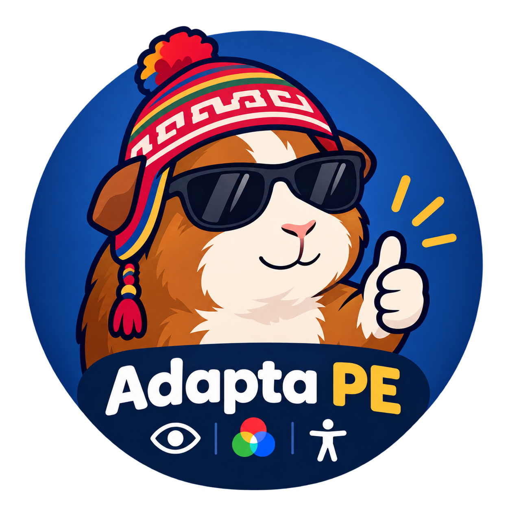

AdaptaPE
AdaptaPE necesita tu permiso para escuchar tus órdenes, incluso al cambiar de pestaña o ventana. Cuando Chrome lo solicite, elige «Permitir».
Se utiliza el reconocimiento de voz del navegador; este servicio puede procesar audio en línea.
Puedes detener la escucha desactivando Control por voz en el panel de AdaptaPE.